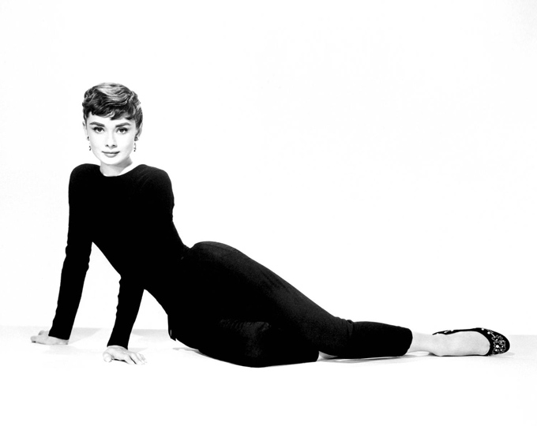

홈 > 브랜드 매거진 > 지방시
지방시
지방시(Givenchy)는 1952년 위베르 드 지방시가 설립한 프랑스 럭셔리 패션·향수 하우스이다.
산업 분야 패션·럭셔리 · 공개 등급 자료 기반 · 브랜드 평가 4.3 ★


한눈에 보는 브랜드
지방시는 1952년 위베르 드 지방시가 25세에 파리에서 문을 연 프랑스 럭셔리 하우스다. 오드리 헵번의 의상을 도맡으며 단숨에 우아함의 대명사로 올라섰고, 1988년 LVMH에 약 600억원 규모로 편입되며 글로벌 그룹의 자산이 된 것이 첫 번째 전환점이다.
1995년 창업자 은퇴 이후 존 갈리아노, 알렉산더 매퀸 등 젊은 디자이너에게 크리에이티브를 넘기며 현대 패션의 실험장으로 변모한 것이 두 번째 전환점이다. 현재 오트 쿠튀르, 기성복, 액세서리, 향수, 코스메틱을 아우르며 전 세계 약 100개 매장을 운영한다.
브랜드 관점
지방시를 읽는 핵심은 '절제된 건축적 우아함'이라는 창업 DNA와, 거장 디자이너 교체를 통한 주기적 재해석 전략의 긴장 관계다. 케링 산하의 생로랑·발렌시아가, 프라다 등이 직접 경쟁군으로, 지방시는 인지도에서 1위권 메종에 다소 밀리지만 쿠튀르 헤리티지와 4G 상징 자산으로 차별화한다.
2024년 알레산드로 발렌티 CEO 선임에 이어 2025년 사라 버튼을 영입한 더블 리더십 교체는 침체된 매출과 브랜드 노이즈를 정돈하려는 명확한 신호다. 한국 독자에게 중요한 맥락은, 버튼의 데뷔가 표적으로 삼은 '여성성 회복과 상업적 착장'이 백화점·면세 채널이 핵심인 국내 소비층과 정확히 맞물린다는 점이다.
즉 지방시는 지금 정체성 회복기이며, 향후 2~3년 컬렉션의 흥행이 한국 내 위상을 가른다.
시작과 성장
제2차 세계대전 직후 파리 패션이 디올의 '뉴 룩'으로 재건되던 시대, 자크 파트·스키아파렐리 등에서 경력을 쌓은 위베르 드 지방시는 1952년 플렌 몽소에 자신의 메종을 열었다. 면 셔팅 소재의 분리형 블라우스와 스커트로 격식을 허문 '세퍼러블' 제안이 첫 성공이었다.
첫 번째 전환점은 1953년 오드리 헵번과의 만남으로, 영화 의상과 개인 의상을 평생 책임지며 브랜드를 스타일 아이콘과 동의어로 만들었다. 두 번째 전환점은 1957년 향수 사업 출범과 1959년 본거지를 파리 8구 3 아브뉘 조르주 생크로 이전한 사건으로, 쿠튀르를 넘어선 토털 럭셔리 기반을 마련했다.
국제 확장은 1987년 향수 부문이 LVMH에 편입되고 1988년 패션 부문이 그룹에 합류하며 가속됐으며, 1995년 창업자 은퇴 후 갈리아노·매퀸·줄리앙 맥도날드·리카르도 티시·클레어 웨이트 켈러로 이어진 디자이너 계보가 세계 시장으로 외연을 넓혔다.
브랜드 아이덴티티
지방시의 핵심 가치는 순수한 라인과 형태의 명료함, 그리고 창업자가 신봉한 쿠튀르의 건축적 규율이다. 비주얼 아이덴티티의 중심에는 2003년 폴 반스가 디자인한 4G 엠블럼이 있다.
네 개의 G가 맞물린 기하학적 문양은 켈틱 매듭과 모더니즘 모노그램을 동시에 환기하며 헤리티지와 미래성의 균형을 표현한다. 타깃은 절제된 럭셔리와 에지를 함께 원하는 도시형 고소득 남녀로, 클래식 우아함과 스트리트 감각을 오가는 양면성이 특징이다.
브랜드 보이스는 과장 없는 자신감과 시적 절제를 유지하되, 디자이너 교체기마다 톤을 재조율하며 동시대성을 확보한다.
제품과 서비스
제품군은 오트 쿠튀르, 남녀 기성복, 가죽 액세서리, 슈즈, 향수·코스메틱으로 구성된다. 시그니처 가죽 제품은 각진 실루엣의 안티고나 백으로, 4G 지퍼 풀과 오각형 패치가 정체성을 새긴다.
가격은 사이즈와 가죽에 따라 약 1,550~2,050유로 선에서 형성된다. 판매는 직영 부티크, 공식 온라인, 백화점·면세 채널을 통해 이뤄진다.
현재 상태
본사는 파리 8구 3 아브뉘 조르주 생크에 위치하며 모회사는 LVMH다. CEO는 2024년 선임된 알레산드로 발렌티, 크리에이티브 디렉터는 2025년 합류한 사라 버튼이다.
매장은 전 세계 약 100개로 알려져 있고, 운영 국가 수와 임직원 수는 미공개다. 매출은 개별 브랜드 단위로 공개되지 않으며, 소속된 LVMH 패션·가죽 부문 전체가 2025년 약 377억 유로를 기록했다.
한국에서는 갤러리아, 신세계, 신라·롯데 면세, SSG 대구 등에 매장을 두고 있으며 뷰티 부문은 현대 압구정에 첫 단독 매장을 열었다.
타임라인
BI/CI 변천사
함께 읽을 브랜드
 패션·럭셔리 · 매거진 완성프라다
패션·럭셔리 · 매거진 완성프라다프라다는 아름다움을 익숙한 화려함보다 지적인 긴장감으로 표현하는 브랜드다. 소재와 형태, 절제된 색감은 패션을 단순한 장식이 아니라 관찰과 해석의 대상으로 만든다.
 패션·럭셔리 · 편집 검수크리스챤 디올
패션·럭셔리 · 편집 검수크리스챤 디올크리스챤 디올(Christian Dior)은 1946년 파리에서 설립된 프랑스 럭셔리 패션 하우스이다.
 패션·럭셔리 · 편집 검수Paco Rabanne
패션·럭셔리 · 편집 검수Paco RabannePaco Rabanne는 2016년에 기록된 Fashion 계열의 브랜드 아이덴티티 사례입니다. Zak Group가 아이덴티티 작업의 디자이너로 기록되어 있습니다....
Au
Aurlands
패션·럭셔리 · 편집 검수AurlandsAurlands는 2019년에 기록된 Fashion 계열의 브랜드 아이덴티티 사례입니다. Heydays가 아이덴티티 작업의 디자이너로 기록되어 있습니다. 공개 섹션...
 패션·럭셔리 · 매거진 완성티파니
패션·럭셔리 · 매거진 완성티파니티파니는 주얼리 자체만큼이나 색과 포장, 선물의 의식을 브랜드 자산으로 만든다. 블루 박스와 매장 경험은 제품을 구매하는 순간을 특별한 사건으로 바꾸며, 브랜드의 상...
 패션·럭셔리 · 편집 검수디젤
패션·럭셔리 · 편집 검수디젤디젤(Diesel)은 1978년 렌조 로소가 이탈리아 브레간체에서 설립한 데님 중심의 컨템포러리 패션 브랜드다. 도발적이고 실험적인 디자인으로 데님 헤리티지를 재해석...
 패션·럭셔리 · 편집 검수생 로랑
패션·럭셔리 · 편집 검수생 로랑생 로랑(Yves Saint Laurent)은 1961년 파리에서 설립된 프랑스 럭셔리 패션 하우스이다.
맥도날드는 가장 평범한 소비재를 세계 어디서나 읽히는 대중문화의 기호로 바꾼 브랜드다. 햄버거와 감자튀김은 단순한 메뉴지만, 맥도날드는 속도, 표준화, 접근성, 익숙...